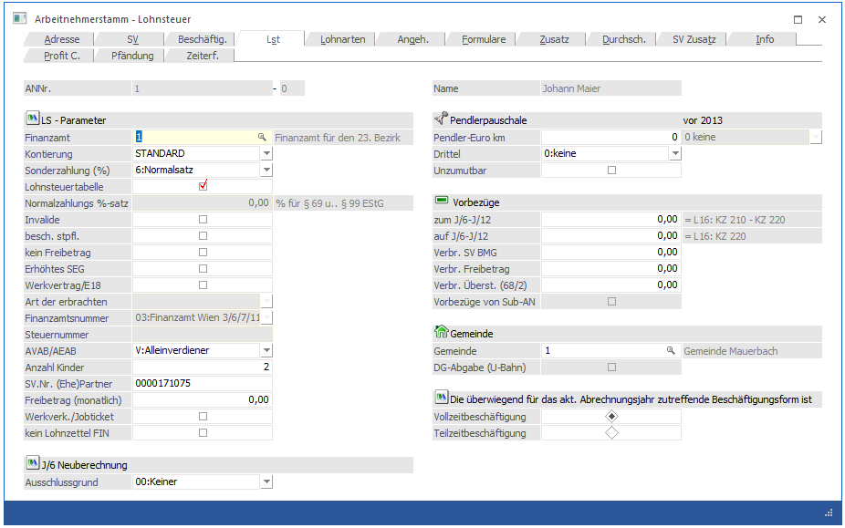

In diesem Fenster, das über den Menüpunkt
1 Stammdaten
1 Arbeitnehmer
1 Arbeitnehmerstamm
oder Schnellaufruf
1 STRG + A
1 Register Arbeitnehmerstamm - LST
aufgerufen wird, werden die LST-relevanten Daten erfasst und verwaltet.

LS-Parameter
Ø Finanzamt
Eingabe des Finanzamtes. Wenn die Finanzamtsnummer eingetragen und bestätigt wurde, wird unter dem Eingabefeld der Name des Finanzamts angezeigt. Standardmäßig wird die FA-Nummer 1 vergeben, sollten mehrere Finanzämter benötigt werden, müssen diese im Programmpunkt
1 Stammdaten
1 Mandantenstammdaten
1 Betriebsdaten
angelegt werden. Wird ein Finanzamt ausgewählt, bei dem das Inaktiv-Kennzeichen gesetzt ist, wird eine entsprechende Meldung ausgegeben.
Beispiel für unterschiedliche SV- und Finanzamts-Nummern
Die Lohnverrechnung wird zentral für eine Baufirma mit verschiedenen Zweigstellen und Baustellen durchgeführt.
Für die verschiedenen Zweigstellen muss jeweils eine Finanzamtsnummer vergeben werden (KommSt muss an die jeweilige Gemeinde abgeführt werden); für die verschiedenen Baustellen muss jeweils eine SV-Nummer vergeben werden (nur wenn sich die Baustellen in unterschiedlichen Bundesländern befinden). Bei den Monatsauswertungen wird für jedes Finanzamt ein FIBU-Beleg bzw. für jede Sozialversicherungsnummer eine Beitragsnachweisung gedruckt.
Hinweis:
Ein AN kann nicht ohne ein gültiges Finanzamt angelegt werden.
Ø Kontierung
Aus der Auswahllistbox kann eine Kontierung ausgewählt werden, nach der der AN in der Finanzbuchhaltung gebucht werden soll. Die Kontierung kann über den die "Lohngruppen" (Menüpunkt Stammdaten/Lohnarten/Lohngruppentexte) angelegt werden. Sind keine alternativen Kontierungen angelegt, wird der Wert "STANDARD" vorgeschlagen.
Ø Sonderzahlung %
Im Normalfall wird in diesem Eingabefeld "6 - Normalsatz" eingetragen. In Spezialfällen (wenn es sich z.B. um Grenzgänger handelt) kann hier auch "0 - keine Steuer" ausgewählt werden.
Ø Lohnsteuertabelle
Ist diese Checkbox aktiv, erfolgt die Lohnsteuerberechnung bei Normalzahlungen laut der Lohnsteuertabelle.
Ist die Checkbox deaktiviert, kann im Eingabefeld
Ø % für § 69 u. § 99 EStG
der Prozentsatz eingetragen werden, mit dem die Lohnsteuer für Normalzahlungen berechnet werden muss. Dabei ist zu beachten, dass die LSt mit dem eingetragenen Prozentsatz vom Bruttobezug gerechnet wird.
Ø Invalide
Ist diese Checkbox aktiviert, wird für diesen AN kein DB und keine KommSt. gerechnet.
Ø Besch. Steuerpfl.
Wird diese Checkbox aktiviert, dann darf für den AN kein AVAB bzw. AEAB berücksichtigt werden.
Ø kein Freibetrag
Ist diese Checkbox aktiviert, wird bei Sonderzahlungen der Freibetrag von € 620,-- nicht berücksichtigt.
Ø Erhöhtes SEG
Durch Aktivieren dieser Checkbox kann der erhöhte SEG-Zuschlag von € 540,-- in Anspruch genommen werden. Bleibt die Checkbox inaktiv, kann nur der normale SEG-Zuschlag von € 360,-- in Anspruch genommen werden.
Ø Landarbeiterfreibetrag (gemäß § 104)
Von den Einkünften aus nichtselbständiger Arbeit der Land- und Forstarbeiter ist bei der Berechnung der Lohnsteuer ein besonderer Freibetrag (Landarbeiterfreibetrag) von jährlich € 171,- (= € 14,25 / Monat) abzuziehen. Als Land- und Forstarbeiter n diesem Sinne gelten Arbeitnehmer, die in land- und forstwirtschaftlichen Betrieben ausschließlich oder überwiegend körperlich tätig sind und der PVA der Arbeiter (umfasst auch die Land- und Forstwirtschaftliche Sozialversicherungsanstalt) unterliegen oder nach den Merkmalen ihres Dienstverhältnisses unterliegen würden. Der Freibetrag ist bei Vorliegen der entsprechenden Voraussetzungen vom Arbeitgeber automatisch zu berücksichtigen.
Ø Werkvertrag
Wird diese Checkbox aktiviert, werden zusätzliche Eingabefelder freigeschalten. Grundsätzlich wird die Checkbox nur dann aktiviert, wenn es sich um einen AN gemäß § 109a handelt.
Ø Art der erbrachten
In der ersten Auswahllistbox muss ausgewählt werden, um welchen Typ von AN es sich handelt. Dabei gibt es folgende Unterscheidungen:
ü 1:Leistungen als Mitglied des Aufsichtsrates, Verwaltungsrates und andere Leistungen von mit der Überwachung der Geschäftsführung beauftragen Personen (im Sinne des § 6 Abs. 1 Z 9 lit. b UStG 1994)
ü 2:Leistungen als Bausparkassenvertreter und Versicherungsvertreter (im Sinne des § 6 Abs. 1 Z 13 UStG 1994)
ü 3:Leistungen als Stiftungsvorstand (§ 15 Privatstiftungsgesetz)
ü 4:Leistungen als Vortragender, Lehrender und Unterrichtender
ü 5:Leistungen als Kolporteur und Zeitungszusteller
ü 6:Leistungen als Privatgeschäftsvermittler
ü 7:Leistungen als Funktionär von öffentlichen-rechtlichen Körperschaften, wenn die Tätigkeit zu Funktionsgebühren nach § 29 Z 4 EStG 1988 führt
ü 8:sonstige Leistungen, die im Rahmen eines freien Dienstvertrages erbracht werden und der Versicherungspflicht gemäß § 4 Abs. 4 ASVG unterliegen
Ø Finanzamtsnummer / Steuernummer
Aus der Auswahllistbox kann das Finanzamt gewählt werden, bei dem der AN seine Steuernummer hat. Im nächsten Feld kann dann die dazu gehörige Steuernummer eingetragen werden (die Richtigkeit der Angaben wird geprüft und ggf. mit einer Fehlermeldung angezeigt). Dies ist nur bei den AN einzutragen, die auch ihre Steuernummer bekannt gegeben haben.
Als Ergebnis dieser Eingaben bezüglich Werksvertrag wird ein eigenes Formular E18 gedruckt bzw. auch elektronisch übermittelt.
Hinweis:
Wenn in einem Arbeitsjahr mehrere Werksverträge mit einem "Arbeitnehmer" geschlossen werden, dann ist für jeden Werksvertrag ein SUB-AN anzulegen.
Ø AVAB/AEAB
Aus der Auswahllistbox kann gewählt werden, welcher Absetzbetrag in Anspruch genommen werden kann. Folgende Eingaben sind möglich:
N Es wird weder der Alleinverdiener- noch der Alleinerzieherabsetzbetrag in Anspruch genommen.
J Der Alleinverdienerabsetzbetrag wird bei der Lohnsteuerberechnung berücksichtigt.
E Der Alleinerzieherabsetzbetrag wird bei der Lohnsteuerberechnung berücksichtigt.
Ø Anzahl Kinder
Dieses Feld kann bearbeitet werden, wenn im Feld AVAB/AEAB die Option AVAB oder AEAB ausgewählt wurde, wobei hier die Anzahl der Kinder des AN hinterlegt wird. Wird die Option "AVAB" oder "AEAB" gewählt, dann muss die Anzahl der Kinder zumindest 1 sein (Ausnahme: es handelt sich um einen Pensionisten, dann darf auch bei AVAB die Anzahl der Kinder auf 0 stehen).
Ø SV-Nr. (Ehe)Partner
Dieses Feld sollte nur ausgefüllt werden, wenn es sich um eine AVAB handelt bzw. im Laufe des Jahres mit AVAB abgerechnet wurde. Eingabe der Sozialversicherungsnummer und des Geburtstages (wenn keine Sozialversicherungsnummer bekannt ist, wird nur der Geburtstag mit führenden 0 eingetragen) des (Ehe-)Partners.
Ø Freibetrag
Eingabe des monatlichen Freibetrages laut Freibetragsbescheid. Der Freibetrag vermindert bei der Abrechnung die Lohnsteuerbemessungsgrundlage. Bei einem Jahreswechsel werden alle Freibeträge auf 0 zurückgesetzt.
Ø Werkverkehr
Mit dieser Checkbox kann vorbelegt werden, ob der Arbeitnehmer Teilnehmer des Werkverkehrs ist, falls dieser am L16 extra ausgewiesen werden muss (Position Werkverkehr, Anzahl Kalendermonate). In den Abrechnungsparameter wird dann diese Einstellung geladen, kann aber dort übersteuert werden.
Ø Kein Lohnzettel FIN
Wird diese Checkbox aktiviert, wird der Lohnsteuer Bereich am Lohnzettel nicht gebildet und auch nicht übermittelt.
J/6 Neuberechnung
Ø Ausschlussgrund
Hier kann bereits im laufenden Abrechnungsjahr im Bedarfsfall ein Ausschlussgrund für die Jahressechstelneuberechnung hinterlegt werden. Wird ein Ausschlussgrund hinterlegt, hat dies zur Folge, dass bei einer Jahressechstelneuberechnung geprüft wird, ob das Ergebnis der Neuberechnung positiv oder negativ wäre. Bei einem positiven Ergebnis wird eine Neuberechnung über die Rollung erzwungen. Bei einem negativen Ergebnis wird die Neuberechnung unterdrückt und ein entsprechender Hinweis ausgegeben.
Hinweis:
Beim Jahresabschluss werden die Ausschlussgründe wieder auf "00 Keiner" zurückgesetzt. Im Jahresabschlussprotokoll gibt es bei den jeweiligen Arbeitnehmern einen entsprechenden Hinweis.
Pendlerpauschale
Ø Pendler-Euro km
In diesem Eingabefeld werden die tatsächlichen Kilometer hinterlegt, die am Pendlerpauschalantrag angegeben wurden. Diese Kilometer dienen zur Ermittlung der Pendlerpauschalstufe sowie für die Berechnung des Pendler-Euros.
Ø Drittel
In der Auswahllistbox Drittel kann ausgewählt werden, ob ein Pendlerpauschalanspruch vorliegt und wenn ja zu welchem Anteil. Es kann gewählt werden zwischen
ü 0: keine
ü 1: 1/3
ü 2: 2/3
ü 3: 3/3
Wird bei "Pendler-Euro km" ein Wert eingegeben und im Feld "Drittel" ist noch "0-keine" hinterlegt, wird automatisch "3: 3/3" vorgeschlagen
Ø Unzumutbar
Mittels Checkbox Unzumutbar wird die Ermittlung der Pendlerpauschalstufe beeinflusst. Wird diese Checkbox aktiviert, so wird in Kombination mit den unter "Pendler-Euro km" hinterlegten Kilometer die unzumutbare Pendlerpauschalstufe ermittelt.
Hinweis:
Der Pendlerrechner kann über den Button "Pendlerrechner" aufgerufen werden. Es öffnet sich dann die Homepage des Finanzministeriums im Bereich der Pendlerrechner-Abfrage.
Ø vor 2013
Dabei handelt es sich um ein Informationsfeld, wo angezeigt wird, welche Einstellung bis 2012 hinterlegt war. Es können hier keine Änderungen vorgenommen werden.
Vorbezüge
Die Eingabefelder der Vorbezüge werden nur dann ausgefüllt, wenn ein Arbeitnehmer während des Jahres eintritt und ein L16-Formular vorlegt. Beim nächsten Jahreswechsel werden die Vorbezüge auf 0 gestellt.
Ø zum J/6 (KZ 210 L16)
Eingabe der Bezüge zum Jahressechstel: das sind alle Bezüge, die am L16 unter Position 210 aufgeführt sind. Davon müssen allerdings die Bezüge der KZ 220 abgezogen werden.
Ø auf J/6 (KZ 220 L16)
Eingabe der bisher erhaltenen Sonderzahlungen: das sind alle Bezüge laut L16 Position 220
Ø Verbr. SV BMG
Da nur die Höchstbemessungsgrundlage der Sonderzahlungen mit den begünstigten SV-Prozentsätzen abgerechnet werden müssen, müssen hier ebenfalls die Vorbezüge (gleicher Werte wie unter Punkt "auf J/6") eingetragen werden.
Ø Verbr. Freibetrag
Es bleibt es dem Arbeitgeber überlassen, ob ein eventl. verbrauchter Freibetrag von € 620,-- eingetragen wird oder nicht, da ein Arbeitnehmer mehrere Freibeträge im Jahr beanspruchen kann (diese werden über den Jahresausgleich rückverrechnet).
Ø Rest. Überst. (68/2)
Da pro Monat nur die ersten 5 Überstunden steuerbegünstigt abgerechnet werden dürfen, muss, wenn der Arbeitnehmer während des Monats eingetreten ist und bereits Überstunden steuerbegünstigt ausbezahlt wurden, hier die Anzahl der bereits konsumierten Überstunden eingetragen werden. Die Eingabe wird vom Programm geprüft, es dürfen max. 5 Überstunden eingegeben werden.
Diese Eintragung sollte nur im Monat des Eintritts bzw. des Austritts (dann wird die Anzahl der verbrauchten Überstunden beim Erfassen des L16-Formulares automatisch vorgeschlagen) gemacht werden.
Die Felder bezüglich Vorbezüge werden mit dem nächsten Jahresabschluss im WinLine LOHN wieder gelöscht.
Ø Vorbezüge von Subarbeitnehmer berücksichtigen
Wird diese Checkbox aktiviert (dies ist allerdings nur dann möglich, wenn es sich um einen SUB-AN mit einer SUB-Nr. > 0 handelt, und wird bei der Anlage eines neuen SUB-AN automatisch gesetzt), dann werden Abrechnungen, die bei SUB-AN bereits durchgeführt wurden, bei der laufenden Berechnung der relevanten Daten (bezieht sich auf die J/6-Berechnung) berücksichtigt.
Beispiel:
Ein Lehrling wird während des Monats als Arbeiter/Angestellter übernommen. Aus diesen Grund muss ein SUB-AN angelegt werden, damit der AN mit 2 unterschiedlichen Beitragsgruppen (Lehrling und ARB/ANG) abgerechnet werden muss. Für die weiteren Abrechnungen des AN ist es sinnvoll, die Checkbox zu aktivieren, damit auch bei den nachfolgenden Abrechnungen das J/6 für Sonderzahlungen richtig berechnet wird.
Achtung:
Wenn die Option "Vorbezüge von Subarbeitnehmer berücksichtigen" aktiviert ist, dann muss auch darauf geachtet werden, dass die AN in der richtigen Reihenfolge abgerechnet werden. D.h. wenn beim SUB-AN 1 die Option gesetzt wird, dann muss zuerst der SUB-AN 0 abgerechnet werden, damit die Werte dann beim SUB-AN 1 berücksichtigt werden können.
Gemeinde
Ø Gemeinde
Hinterlegung einer Gemeinde. Bei der Neueinlage eines AN wird der Wert aus dem Feld "Finanzamt" übernommen und kann hier ggf. noch geändert werden. Wenn die Gemeindenummer eingetragen und bestätigt wurde, dann wird auch der Name der Gemeinde angezeigt (sofern die Definition in den Betriebsdaten erfolgte). Im Normalfall kann hier der gleiche Betrieb eingetragen werden, der auch im Feld "Finanzamt" hinterlegt wurde. Eine alternative Gemeinde wird nur dann eingetragen, wenn die KommSt. an eine andere Gemeinde (z.B. Arbeitskraftüberlassung) abgeführt werden muss. Gemeinden können über den Menüpunkt
1 Stammdaten
1 Mandantenstammdaten
1 Betriebsdaten
angelegt werden. Wird eine Gemeinde ausgewählt, bei dem das Inaktiv-Kennzeichen gesetzt ist, wird eine entsprechende Meldung ausgegeben.
Hinweis:
Ein AN kann nicht ohne einen gültigen Gemeindestamm angelegt werden.
Ø DG-Abgabe (U-Bahn)
Wird nur in Wien verwendet. Durch Aktivierung der Checkbox wird bestimmt, dass für diesen AN die Dienstgeberabgabe abgeführt werden muss. Die Checkbox kann allerdings nur dann aktiviert werden, wenn im Gemeindestamm (Betriebsdaten), der bei dem AN eingetragen wurde, auch die Checkbox "DG-Abgabe (U-Bahn)" aktiviert wurde. Die Dienstgeberabgabe selbst wird in den Abrechnungsparametern hinterlegt.
Ø Die überwiegend für das aktuelle Abrechnungsjahr zutreffende Beschäftigungsform ist:
Hier kann gewählt werden, ob der AN überwiegend einer Vollzeit- oder einer Teilzeitbeschäftigung nachgeht. Diese Information wird für die Ausgabe des L16 benötigt.
Wird der Arbeitnehmer durch Drücken der F5-Taste gespeichert, wird überprüft, ob die Pflichtfelder Beitragsgruppe, Krankenkasse, Finanzamt, Arbeitsstätte und Betrieb ausgefüllt wurden. Ist dies nicht der Fall, wird ein entsprechender Hinweis ausgegeben und der AN wird nicht gespeichert.